Справочник по Git и GitHub · модуль 3 · ветки
Глава 3.6
Сообщения коммитов:
заголовок, описание, генерация через ИИ
В главе разобрано, из каких частей состоит сообщение коммита и по каким правилам его пишут. Первая часть — сообщения, написанные вручную: заголовок, описание после пустой строки, одна задача в одном коммите и исправление неудачного сообщения. Вторая часть — соглашения о формате, принятые в проектах. Третья часть — сообщения, которые генерирует модель: через чат и кнопкой Copilot в VS Code. На проекте sait-vizitka сделано пять коммитов.
- Категория
- Коммиты
- Уровень
- Начальный
- Что получится
- Пять коммитов с проверенными сообщениями, два из них составлены моделью
- Сколько занимает
- Около сорока минут за компьютером
§1Задача главы
В главе 2.3 сообщение коммита было одной строкой: что сделано в проекте. Для коротких правок этого достаточно. Когда из кода не видно, зачем сделана правка, или когда в историю заглядывают через месяц, одной строки не хватает. Поэтому у сообщения есть вторая часть — описание, а к первой строке предъявляют требования по длине и содержанию.
Сообщение коммита похоже на письмо. В списке входящих видна только тема письма, и по ней решают, открывать ли его. Текст письма читают, когда тема заинтересовала. У сообщения коммита то же устройство: первая строка видна в списках истории, остальной текст — при открытии коммита.
Ассоциация: тема и текст письма
Тема письма — одна короткая строка, по ней письмо находят в почтовом ящике. Подробности, причины и договорённости пишут в тексте письма.
Первая строка сообщения — заголовок, он виден в графе и в ответе git log --oneline. Описание после пустой строки видно в полном ответе git log и в подсказке коммита в графе.
Где не совпадаетПисьмо можно отправить без темы. В Git без сообщения коммит не создаётся: команда git commit с пустым сообщением останавливается с ошибкой. Ещё одно отличие: длинную тему почта обрезает, а Git хранит заголовок любой длины, его обрезают только списки истории.
Зачем это нужно в работе
- Найти коммит по задаче. История из заголовков читается как перечень сделанных работ. Нужный коммит находят по первой строке, не открывая изменения.
- Понять причину правки. Код показывает, что изменилось. Почему так сделано, записывают в описании. Через месяц эту причину не восстановить по коду.
- Отменить одну задачу. Если каждая задача лежит в своём коммите, revert из главы 2.6 отменяет её, не трогая соседние.
- Проверить черновик от модели. Модель составляет сообщение по изменениям в коде. Причину правки она не получает, поэтому черновик проверяют и дописывают.
В главе используется проект sait-vizitka в том виде, в каком он остался после главы 3.5. В нём одна ветка main и 30 коммитов, 26 из них на GitHub не отправлены, список изменений пуст. Имена коммитов, сделанных вами, будут отличаться от показанных. Первая часть главы — сообщение, написанное вручную.
Если проекта нет или он в другом состоянии
Архив содержит проект sait-vizitka в том состоянии, с которого начинается глава, — после главы 3.5. В нём файлы проекта, папка .git со всей историей и адрес origin. Имена коммитов, которые уже есть в архиве, совпадают с показанными в главе. Коммиты, которые вы сделаете по ходу главы, получат свои имена: имя коммита зависит от автора и времени.
- Распакуйте архив в папку, где лежат ваши проекты. Появится папка
sait-vizitka. Если папка с таким именем там уже есть, сначала переименуйте старую, например вsait-vizitka-staraya. - Откройте новую папку в VS Code: File → Open Folder →
sait-vizitka. - Проверьте историю в терминале (Ctrl + `). Ответ должен совпасть с этим:
git log --oneline -3
8d0dd10 Добавил телефон на страницу контактов
79cd7b5 Дополнил описание страницы контактов в README
895b31b Исправил адрес почты на странице контактов
В строке состояния — main, на кнопке 26↑, список изменений пуст.
Папка .git скрытая: в Finder и Проводнике её по умолчанию не видно, но VS Code и Git работают с ней как обычно. Имя и почту автора для ваших коммитов Git берёт из настроек главы 1.3. Кнопку Sync Changes не нажимайте: адрес origin ведёт в репозиторий автора справочника, и отправить туда коммиты не получится.
§2Шаг 1. Прочитать историю по сообщениям
Перед тем как писать новые сообщения, посмотрим, как читаются уже записанные. Команда git log --oneline выводит по строке на коммит: имя и первую строку сообщения.
git log --oneline -8
8d0dd10 Добавил телефон на страницу контактов
79cd7b5 Дополнил описание страницы контактов в README
895b31b Исправил адрес почты на странице контактов
0d62db4 Merge branch 'stil-podvala'
c6508f8 Добавил стиль кнопки
f37fe1f Добавил стиль подвала
84f13fc Merge branch 'zagolovok-s-imenem'
2cc18f6 Уточнил заголовок главной страницы
Каждая строка называет одну работу, и по списку восстанавливается, что происходило с проектом: телефон, README, почта, стили подвала и кнопки, заголовок. Сообщения коммитов слияния Git составил сам из имени ветки. Те же строки стоят в разделе GRAPH панели Source Control.
Для сравнения — та же история, если бы сообщения писали без правил. Коммиты и правки те же, изменились только сообщения:
По левому столбцу нельзя понять, какой коммит исправил почту: чтобы найти его, придётся открывать изменения каждого коммита по очереди.
Что получилось.История проекта читается по первым строкам сообщений. Следующие шаги — правила для этой строки и для текста под ней.
§3Шаг 2. Включить проверку длины
Первая строка сообщения называется заголовком (subject). Его длину ограничивают, потому что списки истории показывают строку целиком только до определённой ширины. Документация Git советует держать заголовок не длиннее 50 знаков. Строки описания принято переносить примерно на 72 знаках.
VS Code проверяет обе длины, если включить настройку. Открываем палитру команд CtrlCmd + Shift + P, выбираем Preferences: Open Settings (UI) и набираем в поиске git.inputValidation:
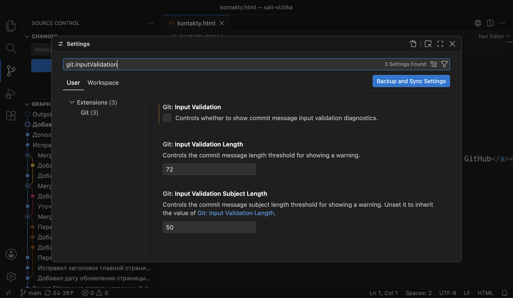
Ставим флажок Git: Input Validation. Настройка сохраняется сразу, кнопки сохранения нет:
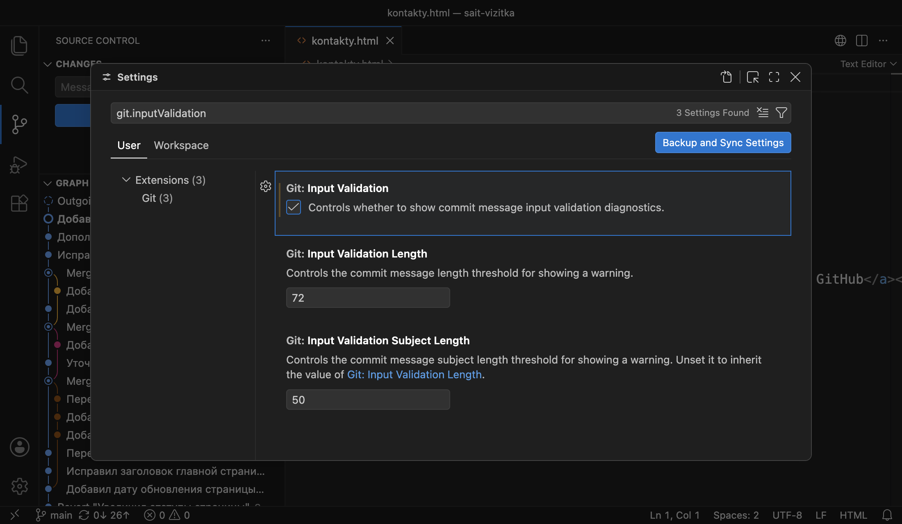
Закрываем вкладку настроек.
Что получилось.VS Code проверяет длину строк в поле Message. Проверка только предупреждает: коммит с длинной строкой Git всё равно запишет.
§4Шаг 3. Написать заголовок
Задача: на странице контактов сделать номер телефона ссылкой. В kontakty.html меняем строку 12:
<p>Телефон: +7 900 123-45-67</p>
<p>Телефон: <a href="tel:+79001234567">+7 900 123-45-67</a></p>
Адрес tel: — ссылка на телефонный номер. На смартфоне нажатие на неё открывает набор номера. Сохраняем файл и отбираем его плюсом. В поле Message пишем одной строкой и действие, и его причину:
Сделал номер телефона на странице контактов ссылкой для звонка
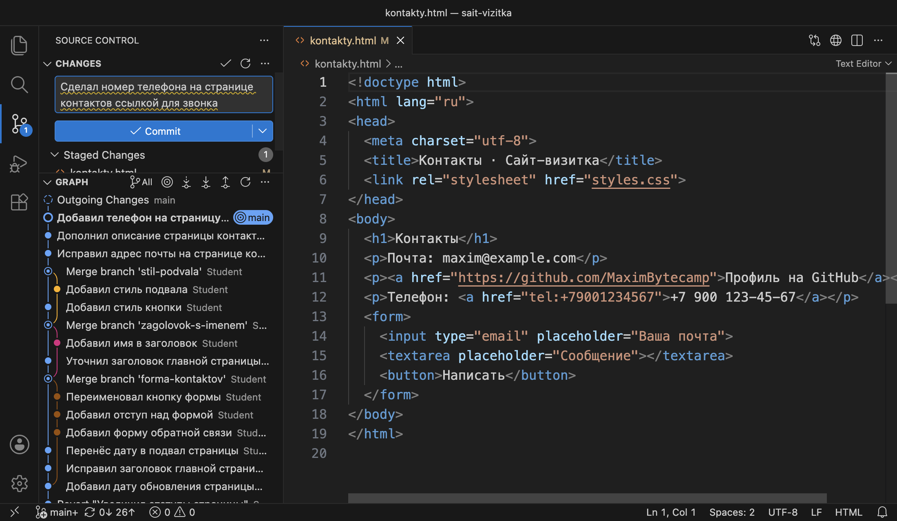
Наводим курсор на подчёркнутое слово. Подсказка сообщает, на сколько строка длиннее порога:
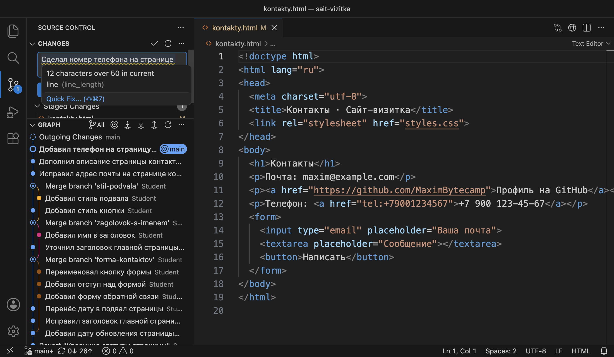
Заголовок сокращают так, чтобы в нём осталось только действие и то, к чему оно относится. Причина правки — «для звонка» — переносится в описание. Остаётся строка из 44 знаков:
Сделал телефон на странице контактов ссылкой
Заголовок в этом проекте строится по одному образцу: глагол в прошедшем времени и предмет правки. «Сделал», «Добавил», «Исправил» отвечают на вопрос «что сделано в коммите». Точка в конце заголовка не ставится.
Что получилось.Заголовок короче 50 знаков и называет одно действие. Причина правки пока нигде не записана.
§5Шаг 4. Добавить описание
Описание (body) — текст сообщения после заголовка. Его отделяют от заголовка пустой строкой: по ней Git и программы, которые показывают историю, отличают заголовок от остального текста. В описании пишут то, чего не видно из кода: причину правки и её последствия.
Новая строка в поле Message начинается клавишей Enter. Коммит из поля делается сочетанием CtrlCmd + Enter, как написано в подсказке пустого поля. Пишем заголовок, нажимаем Enter два раза и пишем описание в две строки:
Сделал телефон на странице контактов ссылкой На телефоне ссылка tel: открывает набор номера, номер не нужно переписывать вручную.
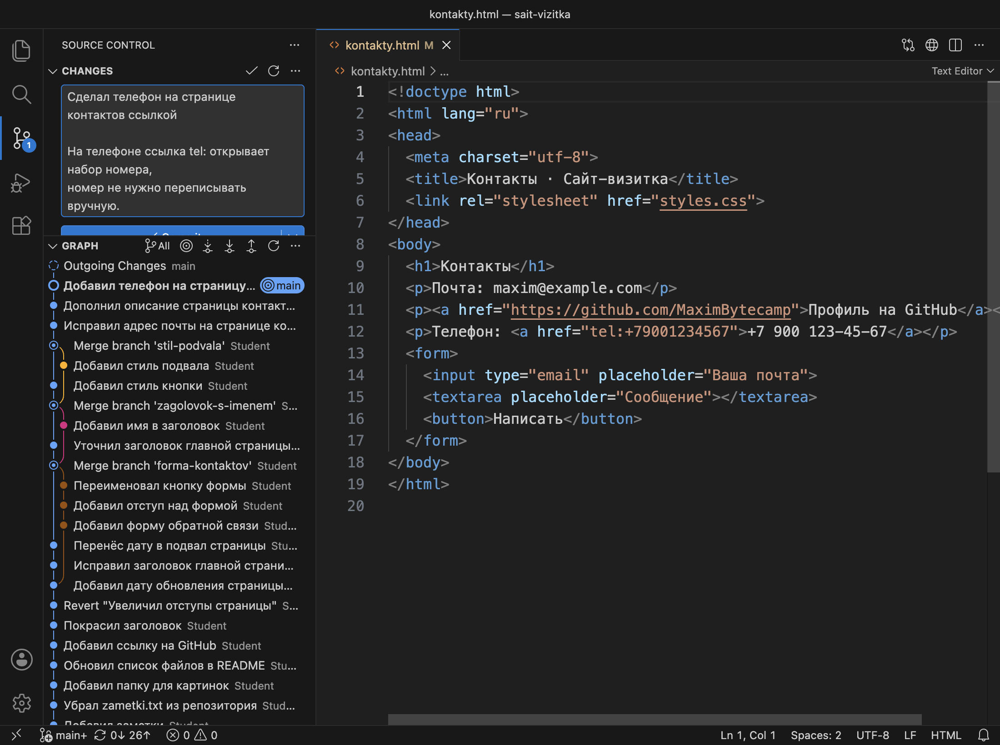
Нажимаем CtrlCmd + Enter или кнопку Commit. В терминале то же сообщение передают двумя ключами -m: первый становится заголовком, второй — описанием, между ними Git вставляет пустую строку. Перевод строки внутри описания вводится клавишей Enter до закрывающей кавычки:
git add kontakty.html git commit -m "Сделал телефон на странице контактов ссылкой" -m "На телефоне ссылка tel: открывает набор номера, номер не нужно переписывать вручную."
Теперь сравним, как сообщение выглядит в коротком и полном выводе истории:
git log --oneline -2 dcb7149 Сделал телефон на странице контактов ссылкой 8d0dd10 Добавил телефон на страницу контактов git log -1 commit dcb71494ac5e08b001e335b8bb98a536c0f42f1b Author: Student <student@example.com> Date: Wed Oct 28 00:33:51 2026 +0300 Сделал телефон на странице контактов ссылкой На телефоне ссылка tel: открывает набор номера, номер не нужно переписывать вручную.
Короткий вывод показывает только заголовок. Полный вывод показывает сообщение целиком с отступом в четыре пробела. В VS Code полное сообщение видно в подсказке: наводим курсор на коммит в разделе GRAPH.
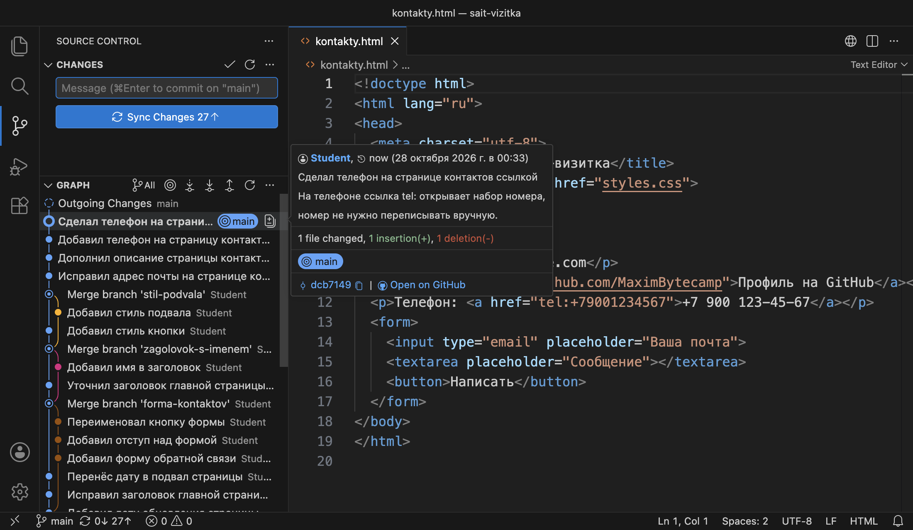
На схеме — из каких частей состоит сообщение и где видна каждая часть.
Что получилось.Коммит dcb7149 с заголовком и описанием. На кнопке 27↑.
§6Шаг 5. Разделить две задачи на два коммита
Заголовок из 50 знаков вмещает одну задачу. Если правок две, сообщение получается либо длинным, либо общим, вроде «Правки стилей и README». Поэтому две задачи записывают двумя коммитами, каждый со своим заголовком. В главе 2.3 это правило звучало так: если в сообщении есть союз «и», проверьте, не две ли это задачи.
Делаем две независимые правки. В styles.css уменьшаем шрифт подвала:
footer {
margin-top: 40px;
color: #6B6560;
}
footer {
margin-top: 40px;
font-size: 14px;
color: #6B6560;
}
В README.md уточняем строку о странице контактов: сейчас на ней почта, телефон и форма.
- `kontakty.html` — страница контактов с формой обратной связи
- `kontakty.html` — страница контактов: почта, телефон, форма обратной связи
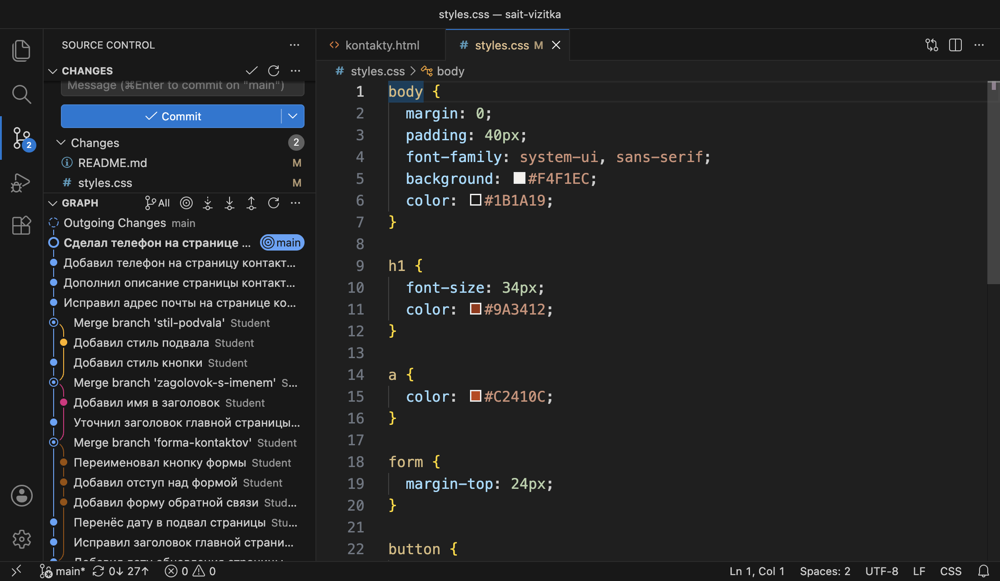
Отбираем плюсом только styles.css и делаем коммит «Уменьшил шрифт подвала». Затем отбираем README.md и пишем сообщение «Обновил README»:
git add styles.css git commit -m "Уменьшил шрифт подвала" [main 7dc3fca] Уменьшил шрифт подвала 1 file changed, 1 insertion(+) git add README.md git commit -m "Обновил README" [main 5e39c73] Обновил README 1 file changed, 1 insertion(+), 1 deletion(-)
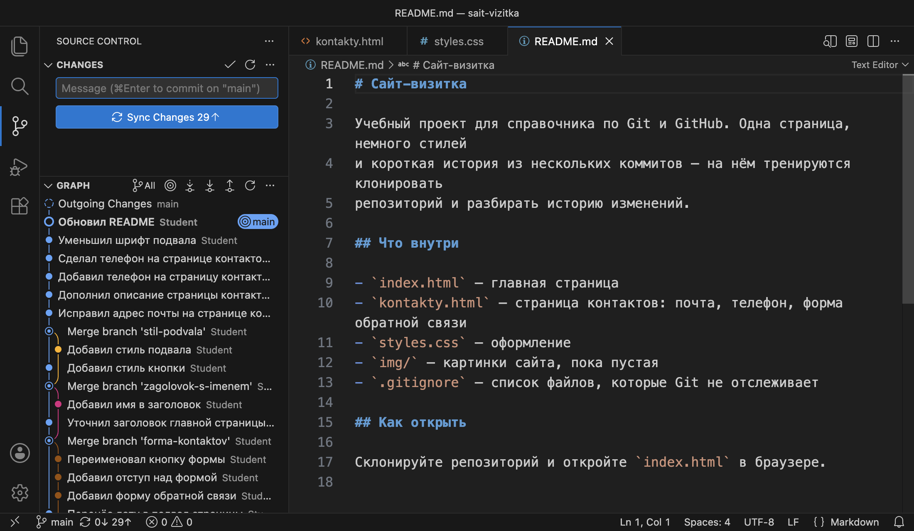
Что получилось.Каждая задача в своём коммите. По сообщению второго коммита не понять, какую часть README обновили.
§7Шаг 6. Исправить сообщение последнего коммита
Сообщение последнего коммита меняет amend из шага 2 главы 2.6. В главе 2.6 amend добавлял в коммит забытый файл. Если в индексе ничего нет, amend заменяет только сообщение:
git commit --amend -m "Перечислил в README содержимое страницы контактов" [main 3c7f7a3] Перечислил в README содержимое страницы контактов Date: Wed Oct 28 00:34:48 2026 +0300 1 file changed, 1 insertion(+), 1 deletion(-) git log --oneline -3 3c7f7a3 Перечислил в README содержимое страницы контактов 7dc3fca Уменьшил шрифт подвала dcb7149 Сделал телефон на странице контактов ссылкой
Коммит 5e39c73 заменён коммитом 3c7f7a3 с тем же изменением и новым сообщением. Строка Date — время исходного коммита: amend его сохраняет.
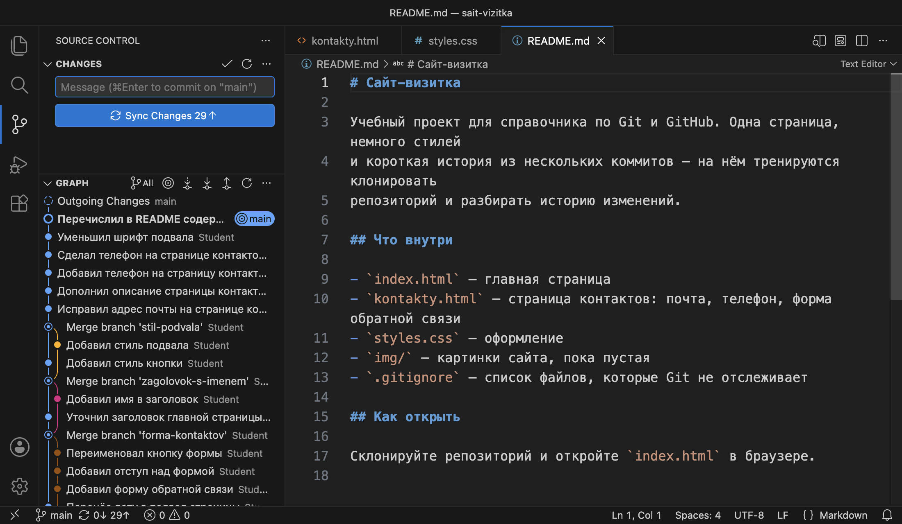
Amend меняет только последний коммит. Сообщение более раннего коммита правят перезаписью истории: все коммиты после него получают новые имена, как при rebase в главе 3.5. Коммиты, отправленные на GitHub, так не исправляют. Поэтому сообщение проверяют до нажатия Commit.
Что получилось.Три новых коммита с понятными заголовками, на кнопке 29↑. Правила, по которым они написаны, в разных проектах записаны по-разному. Вторая часть главы — такие соглашения.
§8Соглашения о формате сообщений
У Git нет требований к тексту сообщения, кроме того, что оно не пустое. Правила устанавливает проект: на каком языке писать, в какой форме глагол, нужна ли метка в начале. Их записывают в README или в отдельный файл с правилами участия в проекте и соблюдают всей командой, чтобы история читалась одинаково.
В проекте sait-vizitka и в этом справочнике действует такое соглашение:
Правила сообщений в проекте sait-vizitka
Во многих проектах сообщения пишут по-английски в повелительном наклонении: Add phone link, «добавить ссылку на телефон». Так сформулированы и сообщения, которые составляет сам Git, например Merge branch 'stil-podvala' и Revert "…".
Распространённое соглашение о формате — Conventional Commits. Заголовок начинается с типа изменения и двоеточия. По типу история фильтруется: например, отдельно выводятся исправления ошибок.
| Тип | Что означает | Сообщение главы в этом формате |
|---|---|---|
feat | Новая возможность | feat: сделал телефон на странице контактов ссылкой |
fix | Исправление ошибки | fix: исправил адрес почты на странице контактов |
style | Оформление кода без изменения работы | — |
docs | Документация | docs: перечислил в README содержимое страницы контактов |
Спецификация Conventional Commits определяет только типы feat и fix, остальные взяты из правил проекта Angular и меняются от проекта к проекту. Тип style в этом соглашении означает пробелы и отступы в коде. Правка CSS, которая меняет вид страницы, к нему не относится, поэтому шрифт подвала записали бы как feat или по правилам конкретного проекта. В sait-vizitka типы не используются.
Что получилось.Правила сообщений записаны списком. По этому же списку проверяется сообщение, которое составила модель. Третья часть главы — генерация сообщений.
§9Шаг 7. Получить сообщение в чате с моделью
Секретарю показали исправленный договор, но не позвали на совещание, где исправления обсуждали. По документу секретарь точно опишет, какие пункты изменились. Почему их изменили, он может только предположить, и такое предположение нужно проверить.
С языковой моделью то же самое. Языковая модель — программа, которая составляет текст по запросу. Для сообщения коммита ей передают изменения из индекса и правила проекта. Причина правки в эти данные не входит, поэтому модель её не получает, если причину не дописали в запрос.
Задача: добавить описание страницы для поисковых систем. В index.html после строки 4:
<meta charset="utf-8"> <meta name="description" content="Сайт-визитка Максима: о себе и контакты для связи.">
Сохраняем файл и отбираем его плюсом. Изменения из индекса выводит команда git diff --staged:
git diff --staged
diff --git a/index.html b/index.html
index d36db34..4ca3438 100644
--- a/index.html
+++ b/index.html
@@ -2,6 +2,7 @@
<html lang="ru">
<head>
<meta charset="utf-8">
+ <meta name="description" content="Сайт-визитка Максима: о себе и контакты для связи.">
<title>Сайт-визитка · Максим</title>
<link rel="stylesheet" href="styles.css">
</head>
Ключ --staged выводит то, что попадёт в коммит, — содержимое индекса. Строка с + добавлена, строки без знака — соседние строки для ориентира. Этот текст и передаётся модели.
Запрос составляется из правил проекта и вывода команды. Последнее правило требует оставить пропуск на месте причины, если её нет в коде.
Составь сообщение коммита по изменениям ниже. Правила: - первая строка до 50 символов: что изменилось в проекте, глагол в прошедшем времени («Добавил…», «Исправил…»); - имена файлов не перечисляй; - если причина изменения не видна из кода, не придумывай её: после пустой строки напиши «Причина: ___». Ответь только текстом сообщения. Изменения (git diff --staged):
Запрос вставляется в любой чат с языковой моделью. Ответ ниже получен в Claude (модель Claude Opus 5):
Добавил краткое описание сайта в метаданные Причина: ___
Заголовок из 43 знаков, глагол в прошедшем времени, имён файлов нет. Причину модель не указала: в коде её нет. Вставляем ответ в поле Message:
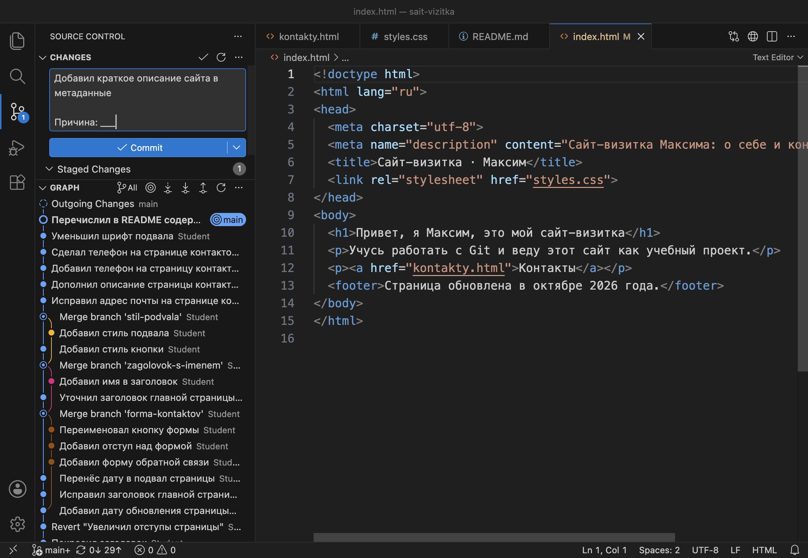
Причину правки дописываем сами: текст из meta description поисковые системы показывают под ссылкой на сайт. Описание заменяем:
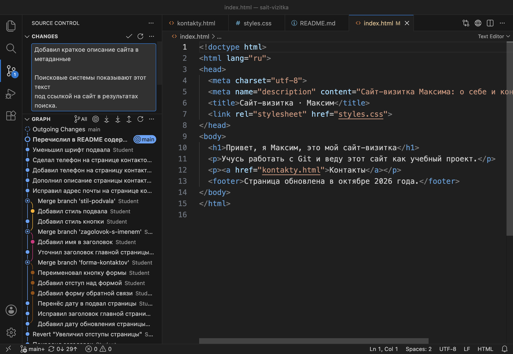
git commit -m "Добавил краткое описание сайта в метаданные" -m "Поисковые системы показывают этот текст под ссылкой на сайт в результатах поиска." git log --oneline -2 44d55d3 Добавил краткое описание сайта в метаданные 3c7f7a3 Перечислил в README содержимое страницы контактов
На схеме — путь сообщения от индекса до коммита.
Вывод git diff --staged содержит код проекта, и после вставки в чат он хранится у сервиса, который работает с моделью. Закрытый код и файлы с ключами в чат отправляют только по правилам организации. Файл .env из главы 2.5 в вывод не попадает: он скрыт через .gitignore и в индекс не отбирается.
Что получилось.Коммит 44d55d3: заголовок составлен моделью, описание дописано вручную. На кнопке 30↑.
§10Шаг 8. Сгенерировать сообщение в VS Code
В VS Code сообщение составляет GitHub Copilot — сервис GitHub, который подключает к редактору языковые модели. Для работы нужен вход в аккаунт GitHub с доступом к Copilot. Без платной подписки работает план Copilot Free с ограничением числа запросов в месяц. Пока вход не выполнен, вверху окна стоит кнопка Sign In.
Задача: убрать подчёркивание ссылок при наведении курсора. В конец styles.css:
a:hover {
text-decoration: none;
}
Сохраняем файл и отбираем его плюсом. Справа в поле Message — кнопка со значком искры:
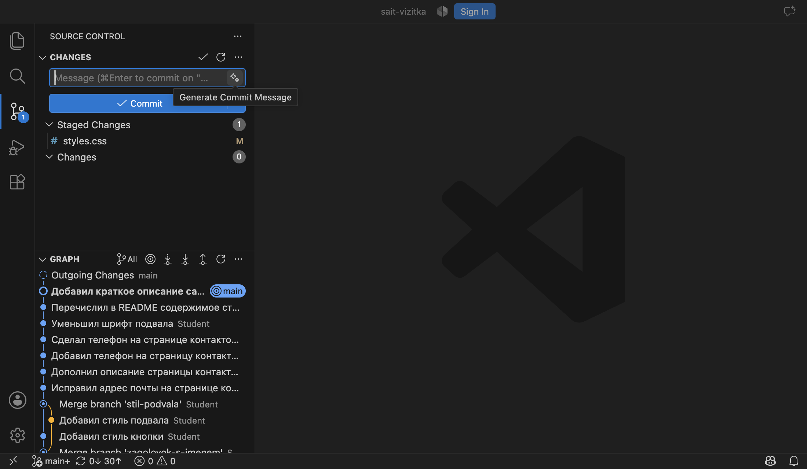
После входа нажимаем кнопку. Через несколько секунд в поле появляется текст:
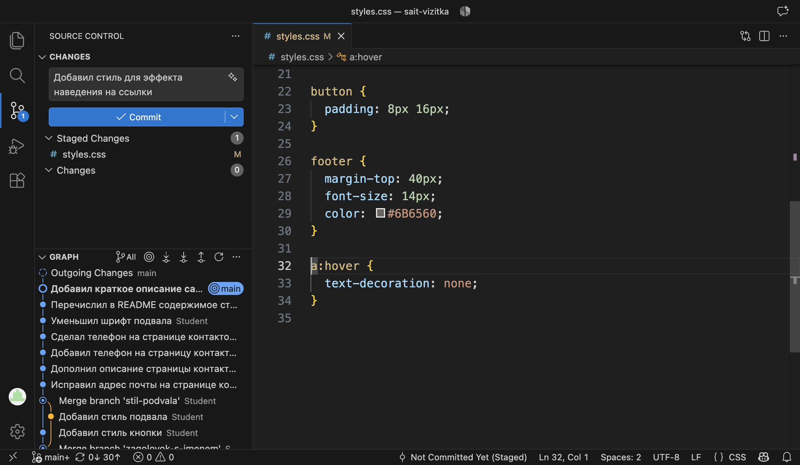
Заголовок на русском, в прошедшем времени, 45 знаков: правилам проекта он соответствует. Но он общий: «стиль для эффекта наведения» не сообщает, какой эффект. Правило text-decoration: none убирает подчёркивание, и заголовок называет это прямо:
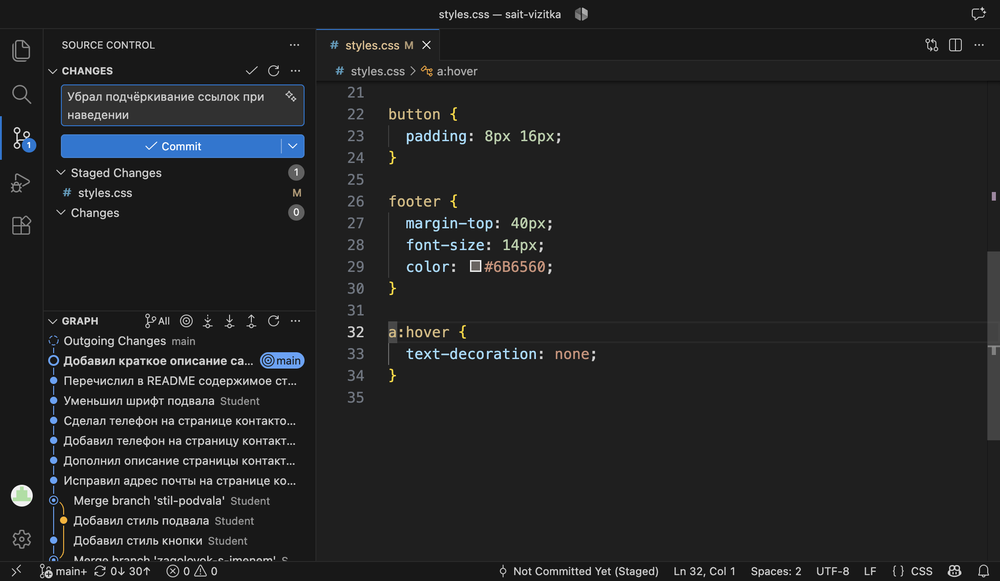
git commit -m "Убрал подчёркивание ссылок при наведении" git log --oneline -6 316e202 Убрал подчёркивание ссылок при наведении 44d55d3 Добавил краткое описание сайта в метаданные 3c7f7a3 Перечислил в README содержимое страницы контактов 7dc3fca Уменьшил шрифт подвала dcb7149 Сделал телефон на странице контактов ссылкой 8d0dd10 Добавил телефон на страницу контактов
Правила для генерации Copilot задаются настройкой. В настройках набираем commitMessageGeneration:
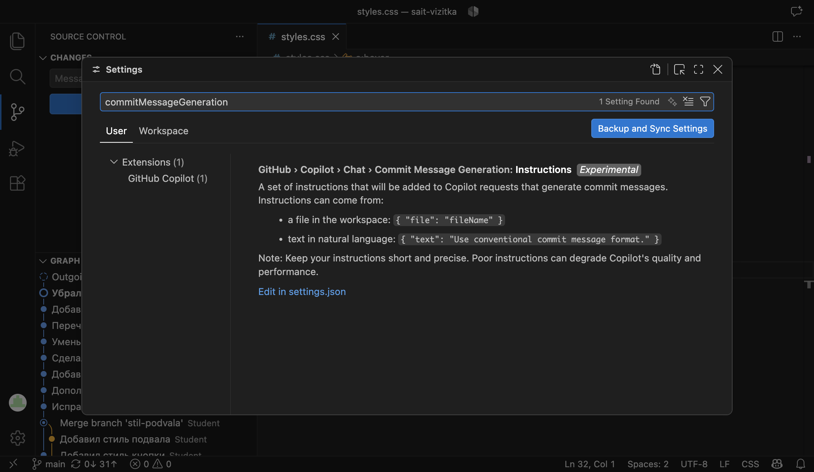
Настройка задаётся в settings.json по ссылке Edit in settings.json. Правило записывается текстом в поле text или берётся из файла проекта через поле file:
"github.copilot.chat.commitMessageGeneration.instructions": [
{ "text": "Пиши на русском. Первая строка до 50 символов, глагол в прошедшем времени." }
]
Что получилось.Коммит 316e202 с заголовком, исправленным после генерации. В проекте 35 коммитов, на кнопке 31↑, список изменений пуст.
§11Проверка сгенерированного сообщения
В шаге 7 модель оставила пропуск на месте причины, в шаге 8 составила слишком общий заголовок. Оба черновика пришлось править. Сгенерированное сообщение проверяют по тем же правилам, что и написанное вручную, и ещё по двум пунктам, связанным с тем, что модель получает только код.
Проверка сообщения перед коммитом
§12Справка: команды и настройки
| Что нужно | В VS Code | Команда или настройка |
|---|---|---|
| Коммит из поля Message | Ctrl/Cmd + Enter или Commit | git commit -m "заголовок" |
| Заголовок и описание | Enter два раза после заголовка | git commit -m "заголовок" -m "описание" |
| Проверка длины строк | Настройки → Git: Input Validation | git.inputValidation, пороги 50 и 72 |
| Только заголовки истории | Строки раздела GRAPH | git log --oneline |
| Сообщение целиком | Подсказка коммита в GRAPH | git log, git show имя |
| Новое сообщение последнего коммита | — | git commit --amend -m "…" |
| Изменения из индекса для запроса | Staged Changes | git diff --staged |
| Сообщение от Copilot | Значок искры в поле Message | правила: github.copilot.chat.commitMessageGeneration.instructions |
§13Частые вопросы
git log --stat. Сообщение называет задачу.§14Проверьте себя
Из каких частей состоит сообщение коммита и чем они разделены?
Из заголовка — первой строки — и описания. Между ними пустая строка. Заголовок называет, что сделано, описание объясняет причину.
Где видно описание коммита, а где только заголовок?
Заголовок — в git log --oneline и в строке коммита раздела GRAPH. Всё сообщение — в git log, git show и в подсказке коммита в графе.
VS Code подчеркнул заголовок волнистой линией и пишет 12 characters over 50. Что делать?
Сократить заголовок до действия и его предмета, а подробности и причину перенести в описание после пустой строки.
Вы сделали коммит с сообщением «Обновил README». Как заменить сообщение?
Если это последний коммит и он не отправлен, выполнить git commit --amend -m "новое сообщение" с пустым индексом. Изменения коммита останутся прежними, имя коммита станет другим.
Что передают модели, чтобы она составила сообщение, и чего в этих данных нет?
Вывод git diff --staged и правила проекта. Задачи и причины правки в этих данных нет, их дописывают вручную.
Copilot предложил «Обновил стили». Подходит ли такой заголовок?
Нет. Он короткий и в форме проекта, но не называет действие. Нужно посмотреть изменения в Staged Changes и написать, что изменилось в стилях.
§15Шпаргалка по главе
заголовок до 50 знаков
пустая строка
описание, строки до 72
Enter — новая строка
Ctrl/Cmd + Enter — коммит
Git: Input Validation
git commit -m "…" -m "…"
git commit --amend -m "…"
git log --oneline
git log, git show
подсказка в GRAPH
git diff --staged
запрос с правилами
причину дописать самим
значок искры в поле Message
commitMessageGeneration
проверить перед коммитом
Итог главы
Сообщение коммита состоит из заголовка и описания, разделённых пустой строкой. Заголовок — одна строка до 50 знаков: что сделано в коммите. Его видно в графе и в git log --oneline. В описании пишут причину правки, строки до 72 знаков, его видно в полном выводе git log и в подсказке графа. VS Code проверяет длину строк при включённой настройке Git: Input Validation. Одна задача записывается одним коммитом, а сообщение последнего коммита исправляет git commit --amend. Язык, форму глагола и метки в начале заголовка устанавливает проект. Модель составляет черновик сообщения по выводу git diff --staged в чате или кнопкой Copilot в поле Message. Причину правки модель не получает, поэтому черновик проверяют по правилам проекта и дописывают. В проекте 35 коммитов, 31 из них на GitHub не отправлен.
- Кадры и ответы команд получены на клоне проекта sait-vizitka в Git версии 2.51.1 и VS Code версии 1.138. Ответ модели в шаге 7 получен в Claude (модель Claude Opus 5), сообщение в шаге 8 — в GitHub Copilot с планом Copilot Free.
- Заголовок не длиннее 50 знаков и пустая строка перед описанием — документация git-commit, раздел Discussion; несколько ключей
-mкак отдельные абзацы — там же, описание ключа-m. - Перенос строк описания на 72 знаках — книга Pro Git, «Участие в проекте».
- Формат
тип: описание, типыfeatиfix— спецификация Conventional Commits 1.0.0. - Кнопка генерации и совет проверять сообщение перед коммитом — документация VS Code, «Staging and committing»; настройка
commitMessageGeneration.instructions— справочник настроек ИИ в VS Code.